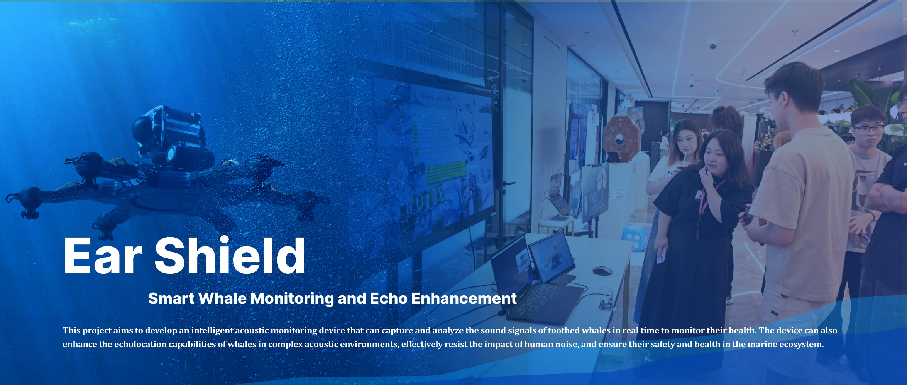

Research & Strategy
Desk research, field observation, stakeholder mapping, service blueprinting, systems framing and insight synthesis.
Service Design / Creative Technology / 3D + AI
Service & Transformation Designer working with Creative Technology, 3D Visualisation and AI-assisted Prototyping.
I translate complex social, cultural and ecological systems into visual, interactive and research-led experiences.
For service design, transformation design, systems thinking and research-led innovation roles.
Multi-Species / Biodiversity Clock, Scone Through Time, Ear Shield, SeedWalkers View Service & Transformation Work 02For creative technologist, 3D visualisation, AI-assisted prototyping and digital experience roles.
Creative Technology & Visual Practice, Independent 3D & AI Resource Platform, Machine Mapping, Codex / AI-assisted web prototype View Creative Technology Practice 03For cultural experience, learning design, social innovation and public engagement roles.
Scone Through Time, Cross-Culture Icebreaker, Biodiversity Clock View Cultural Experience Projects
A future museum-and-park experience translating ecological rhythms in Pollok Country Park into visitor action.
Proof: systems framing, ecological research, phygital service prototype
Turning Scottish food heritage into an interactive learning journey about service innovation and inclusive hospitality.
Proof: research filtering, learning modules, testing-led pivotA public-facing learning and resource platform across Bilibili, Xiaohongshu and a personal resource website.
Proof: 141K+ views, 11.6K likes & collects, 1.1K+ free resource downloads / claims
Smart whale monitoring and echo enhancement, translated into an interactive public education installation.
Proof: acoustic research, speculative system logic, physical computingAlongside academic service and transformation design projects, I run a public-facing 3D and AI-assisted design resource platform across Xiaohongshu, Bilibili and a personal resource website.
Desk research, field observation, stakeholder mapping, service blueprinting, systems framing and insight synthesis.
Learning journeys, public engagement, phygital interaction, prototyping, testing and reflective iteration.
Blender, Unity, Arduino, TouchDesigner, Python, AI-assisted workflows and visual communication.